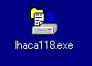
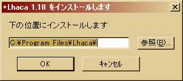
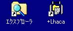
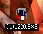
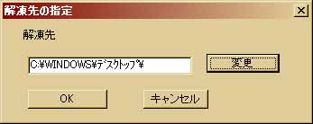
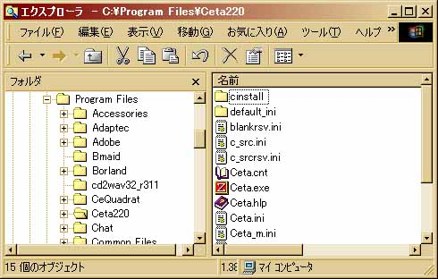

Ceta セットアップ手順書
１．Ceta のインストール
このセクションでは Ceta のインストール及び LSIC-86 のインストールに
必要な解凍ソフト +Lhaca のインストールについて説明します。
１−１．+Lhaca(Lhasa)のインストール
１−２．Cetaのインストール
+Lhacaはフリーの解凍ソフトです。インターネット上に存在するフリーソフト
の多くはデータを圧縮し、ダウンロード時間を短縮しています。圧縮されたソフト
はそのままでは実行不可能で、「解凍ソフト」といわれる分野のソフトを用いて
データを元の形に復元しなければなりません。圧縮の方法にも幾種類か有り、
拡張子（ファイル名の最後の.(ピリオド）以下3〜4文字）を見れば判別できます。
代表的な圧縮形式として、.lzh .zip .lha の三つが有ります。
フリーのコンパイラとして広く知られている「LSIC-86（試食版）」はその内の
.lzh という圧縮形式でインターネット上に公開されています。そのため、コンパイラとして
LSIC-86を使いたいと思っている方は解凍ソフトをまず用意する必要があります。
解凍ソフトにもたくさんの種類が存在しますが今回紹介する+Lhaca（Lhaca デラックス版）
はその軽さで知られており、解凍だけでなく圧縮も可能です。他にも「eo」、「WinZip」
等有りますが今回はインストールの簡易性を優先し+Lhaca を紹介します。
+Lhaca（Lhaca デラックス版）は以下のホームページからダウンロードできます。
幾つかバージョンがありますが、.lzh 形式の解凍は全てのバージョンで可能です。
http://www.vector.co.jp/vpack/browse/pickup/pw4/pw004638.html
ダウンロードする際、ファイルを保存する場所を聞かれてくるので「デスクトップ」
を指定して下さい。ダウンロードが完了すると、デスクトップ画面に下のような
アイコンが現れているはずです。これが+Lhaca のインストール用実行ファイルです。
アイコンをダブルクリックするとインストールが始まります。

インストール画面です。好きな場所を指定して下さい。

インストールが完了すると、下のように+Lhaca へのショートカットがデスクトップ
画面に現れます。このショートカットアイコンをダブルクリックすると+Lhaca
の詳しい設定ができます。が、今はとりあえずここまでで結構です。

ダウンロードする際、ファイルを保存する場所を聞かれてくるので「デスクトップ」
を指定して下さい。ダウンロードが完了すると、デスクトップ画面に下のような
アイコンが現れているはずです。これをダブルクリックすると自動的に解凍が
始まります（自己解凍形式といいます）。

ダブルクリックすると次のような画面が出てきます。もし「解凍先」の場所を変更
したければ「変更」ボタンを押して下さい。

解凍が終わると「Ceta220」というフォルダが作られます。エクスプローラ
などを使って好きな場所へCeta220を移動して下さい。
下の例はC:¥Program Filesの下に移動した場合の例です。

以上でCeta のインストールは完了です。ショートカットを作る際は、右クリック
メニューの「ショートカットの作成」を使って下さい。同じ右クリックの「送る」
->「デスクトップへ（ショートカットの作成）」は使わないで下さい。
２．コンパイラのインストールへお進み下さい。